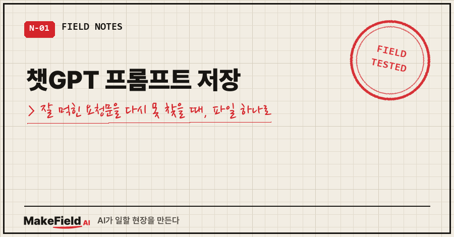
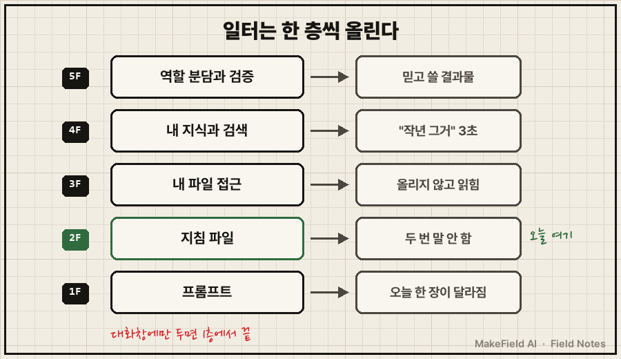
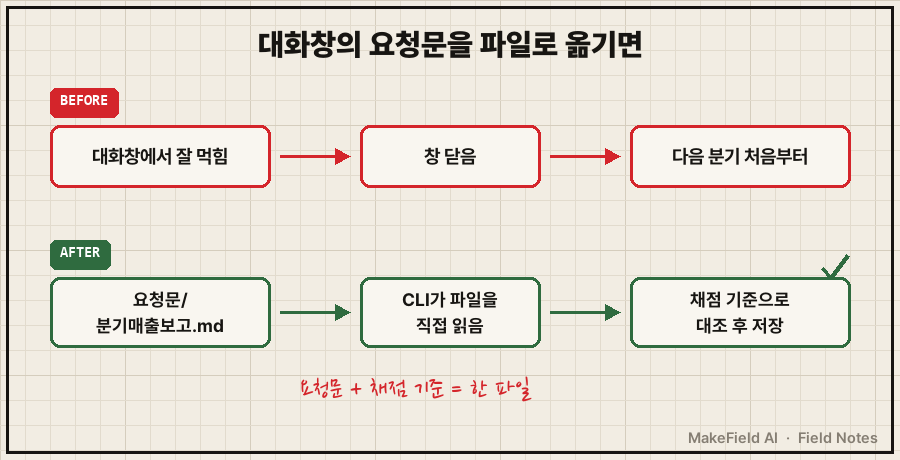
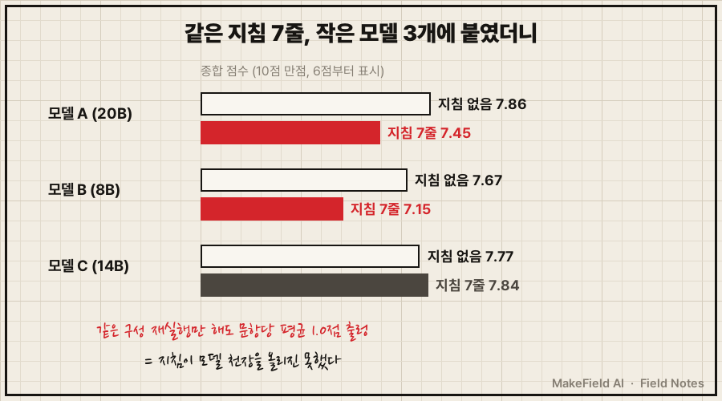

지난주에 꽤 잘 먹힌 요청문이 있었는데, 오늘 다시 쓰려니 어디 있는지 모르겠죠. 대화 목록을 스크롤하다 결국 처음부터 다시 씁니다.
챗GPT 프롬프트 저장은 대화창이 아니라 내 폴더의 텍스트 파일 하나로 하는 게 가장 오래 갑니다. 파일에는 요청문과 함께 "맞았는지 무엇과 대조할지"까지 적어 두세요. 다만 결과는 모델 역량 × 일터 품질의 곱셈이라, 저장한 요청문이 약한 모델의 한계까지 올려 주지는 않습니다. (2026년 10월 기준, 챗GPT·Claude·Gemini 공통)
장비와 데이터 사이에서 15년을 보낸 엔지니어고, 퇴근 후엔 맥북에 AI를 올려 이것저것 시험해 봅니다.
지난 편에서 요청문 네 덩어리로 보고서 한 장을 바꿨죠. 이번 편(책 0-3장)은 그 요청문을 남기는 법입니다.
1. 대화창에 둔 프롬프트는 왜 남지 않을까요
대화창은 일회용 책상이라서예요. 창을 닫으면 책상째 치워집니다.
책에서는 모델을 감싸 실제로 일하게 만드는 둘레 전체를 일터라고 불러요. 일터란 자료를 넣는 통로, 도구, 작업 절차, 결과를 검사하는 장치를 합친 것이다. 업계 말로는 하네스(harness)고요.
프롬프트는 이 일터의 가장 얇은 층이에요. 프롬프트만으로는 안 되는 게 다섯 가지 있습니다.
- 지속 — 창을 닫으면 사라져요
- 내 파일 — "그 폴더 좀 봐 줘"가 안 돼요
- 검증 — "검산해 줘" 하면 했다고 답해요. 맞는지는 모르고요
- 누적 — 어제 알려 준 걸 오늘 또 알려 줘야 해요
- 규모 — 파일 300개 중에서 찾는 건 못 해요
오늘 고칠 건 1번 하나예요. 이 다섯 가지를 층으로 쌓으면 이런 지도가 나옵니다.

글로 옮기면 1층 프롬프트, 2층 지침 파일, 3층 내 파일 접근, 4층 내 지식과 검색, 5층 역할 분담과 검증이에요. 요청문을 파일로 옮기면 2층이고, 거기서 이미 본전입니다.
2. 따라 해 보기: 챗GPT 프롬프트 저장을 파일로, 불러 쓰기까지 (10분)
Claude Code 기준으로 할게요.
① 폴더를 만듭니다. 윈도우 PowerShell이든 맥 터미널이든 똑같아요.
mkdir 내AI일터
cd 내AI일터
mkdir 요청문② 요청문 하나 = 파일 하나. 메모장으로 요청문/분기매출보고.md를 만들고 이 틀을 채웁니다.
# 분기 매출 보고 요청문
- 언제 쓰나: 분기가 끝나고 거래처별 매출 표가 나왔을 때
- 마지막으로 잘 된 날: 2026-10-23 / 쓴 AI: (모델 이름)
[요청문]
(대화창에서 잘 먹혔던 요청문을 그대로 붙여 넣기)
[채점 기준] 다 쓰고 나서 대조할 것
1. 표 합계가 원본 csv 숫자와 같은가
2. 양식 항목이 빠짐없이 채워졌는가
3. 지난 분기 보고서와 순서가 같은가핵심은 채점 기준 칸이에요. 책에서 일터의 심장으로 꼽는 채점기가 이거예요. 거창한 프로그램이 아니라 "무엇과 대조해서 맞다고 할지" 사람이 정한 규칙이면 됩니다.
③ 폴더에서 AI를 켜고 파일을 가리킵니다.
claude
> 요청문/분기매출보고.md 를 읽고 그대로 따라서 3분기매출.csv 로 보고서 써줘.
다 쓰면 '채점 기준' 3개를 하나씩 대조해서 통과/불통과를 표로 보여줘.붙여 넣기가 사라져요. GPT 쪽 Codex CLI(codex), Gemini CLI(gemini)에서도 같은 방식으로 됩니다. 폴더 안 파일을 읽는 구조는 셋이 같아요.
④ 확인 방법. 대조 표에 세 줄이 다 나왔는지 보고, 합계 숫자 하나만 원본 csv에서 직접 찍어 보세요. 맞으면 '마지막으로 잘 된 날'을 오늘로 고칩니다.

여러 번 쓰는 규칙은 나중에 매번 자동으로 읽히는 지침 파일로 올립니다. Claude Code는 CLAUDE.md, Codex CLI는 AGENTS.md, Gemini CLI는 GEMINI.md를 폴더에서 찾아 읽어요(책 2부 내용).
3. 여기서 이렇게 틀립니다: 잘 저장해 두면 어떤 AI에서도 잘 나올까요
아니에요. 결과물 품질 = 모델 역량 × 일터 품질이라, 일터는 모델을 대신하지 못하고 키워 줄 뿐이에요.
저도 이걸 숫자로 맞았습니다. 2026년 10월 12일 새벽, 맥북에 올린 작은 모델 셋(gpt-oss:20b, qwen3:8b, qwen3:14b)에 제 불만을 담은 지침 7줄을 붙여 '튜닝판'을 만들었어요. "자료에 없으면 없다고 해라", "결론 먼저" 같은 규칙이요. 제 자료로 만든 30문항 시험지로 재실행까지 8구성 240번, 자는 동안 7시간 20분 돌렸습니다.
아침에 본 종합 점수(10점 만점)는 이랬어요.
| 모델 | 지침 없음 | 지침 7줄 |
|---|---|---|
| gpt-oss:20b | 7.86 | 7.45 |
| qwen3:8b | 7.67 | 7.15 |
| qwen3:14b | 7.77 | 7.84 |

같은 구성을 한 번 더 돌리기만 해도 문항당 평균 1.0점이 출렁였으니, 이 차이는 "떨어졌다"보다 "못 올렸다"가 정확해요. 공들인 지침 7줄이 작은 모델의 천장을 못 뚫은 거죠.
부작용도 있었어요. "모르면 모른다고 해라"를 넣은 qwen3:8b 튜닝판은 이렇게 끝냈습니다(파일명은 가렸어요).
🔧 search {"path": "문서A.md", "pattern": "미검증\\·실기 확인 필요"} → 일치 없음
🔧 search {"path": "문서B.md", "pattern": "미검증\\·실기 확인 필요"} → 일치 없음
✅ finish (파일 저장 안 함)제 지시문 문구를 글자 그대로 검색하고, 0건이 나오자 파일을 열어 보지도 않고 끝냈어요. 정직하라는 규칙이 확인을 건너뛸 핑계가 된 겁니다.
그래서 요청문 파일에 "쓴 AI" 칸을 둔 거예요. AI를 바꾸면 그 파일의 채점 기준으로 한 번 다시 대조하세요. 저장한 요청문은 증폭기라서, 곱할 모델이 바뀌면 결과도 바뀝니다.
4. 자주 묻는 질문
Q. 챗GPT 안에도 맞춤 설정이 있는데, 챗GPT 프롬프트 저장을 굳이 파일로 해야 하나요?
대화창 안 설정은 그 서비스 안에서만 살아요. 파일로 두면 Claude·Gemini·로컬 모델로 옮겨도 그대로 가져가고, 무엇과 대조할지까지 같이 남습니다.
Q. 인터넷의 챗GPT 프롬프트 모음을 받아 쓰면 안 되나요?
틀은 참고가 돼요. 다만 거기엔 내 자료와 내 채점 기준이 없어요. 모델과 요청문 기법은 누구나 빌리는 거라, 남는 건 내 자료와 그걸 골라 넣는 안목 쪽이더라고요.
Q. 어떤 요청문부터 저장하나요?
제 기준은 두 번 쓴 것부터예요. 세 번째 쓰기 전에 파일로 옮기면 됩니다.
지금 여러분 요청문은 몇 층에 있나요? 다음 편에선 그 일터를 모델처럼 빌릴지, 내 것으로 가질지 이야기해 볼게요.
이 글은 『직장인의 AI 오답 노트』 0-3장을 블로그용으로 다시 쓴 것입니다. 같은 증상의 원인과 점검표 전체는 책에 있어요. 종이책 예스24 https://www.yes24.com/product/goods/198006547 · 종이책 알라딘 https://www.aladin.co.kr/shop/wproduct.aspx?ItemId=404397482 · 전자책 예스24 https://www.yes24.com/product/goods/197975471